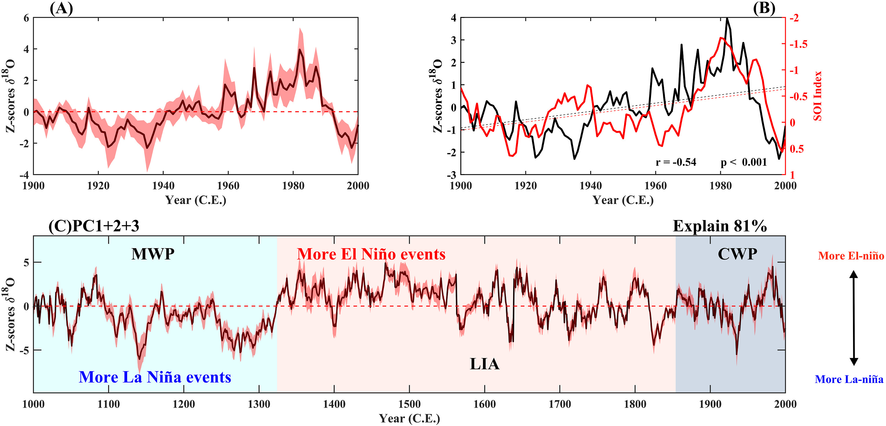
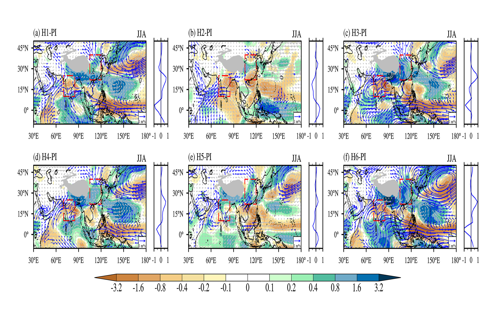
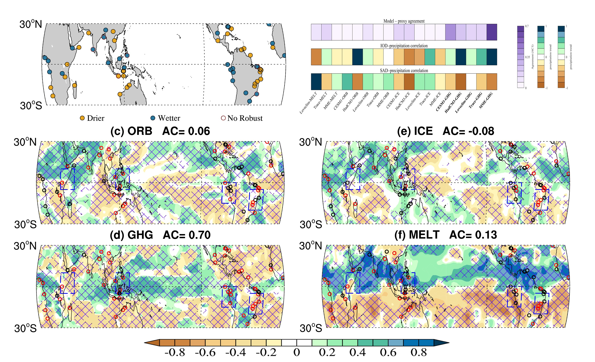

Heinrich Stadials and Tropical Hydroclimate
Investigating spatiotemporal precipitation responses during Heinrich events using proxy networks and model simulations.
I am a Ph.D. candidate at UCLouvain working on paleoclimate dynamics, climate-model experiments, and proxy–model comparisons. My research focuses on Heinrich Stadials, Asian monsoon hydroclimate, AMOC variability, and the distinct impacts of orbital, greenhouse-gas, ice-sheet, and freshwater forcing.
I combine climate-model simulations, paleoclimate reconstructions, and statistical analysis to investigate how abrupt climate events reorganized tropical and subtropical hydroclimate. My current work includes transient and sensitivity experiments, multi-model synthesis, and manuscript preparation for high-impact journals.
Three featured topics in a layout inspired by junhu.info.

Investigating spatiotemporal precipitation responses during Heinrich events using proxy networks and model simulations.

Separating the climatic effects of orbital forcing, greenhouse gases, ice sheets, and freshwater perturbations.

Using model–data comparison, moisture-budget analysis, and robust statistics to test paleoclimate mechanisms.
You can use this section exactly as-is for GitHub Pages. Update the placeholders before publishing.
your.email@uclouvain.be
Earth and Life Institute, UCLouvain, Belgium
Google Scholar · ORCID · GitHub · ResearchGate